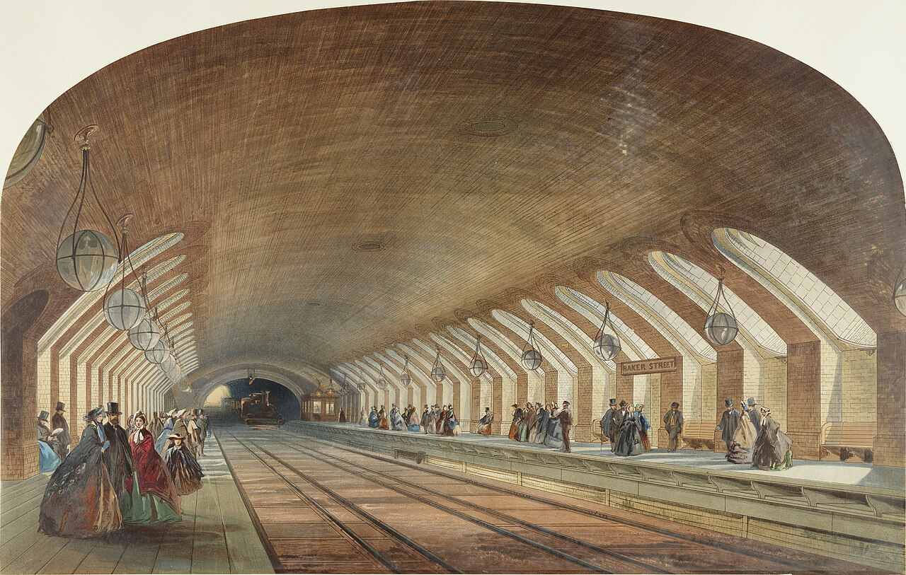
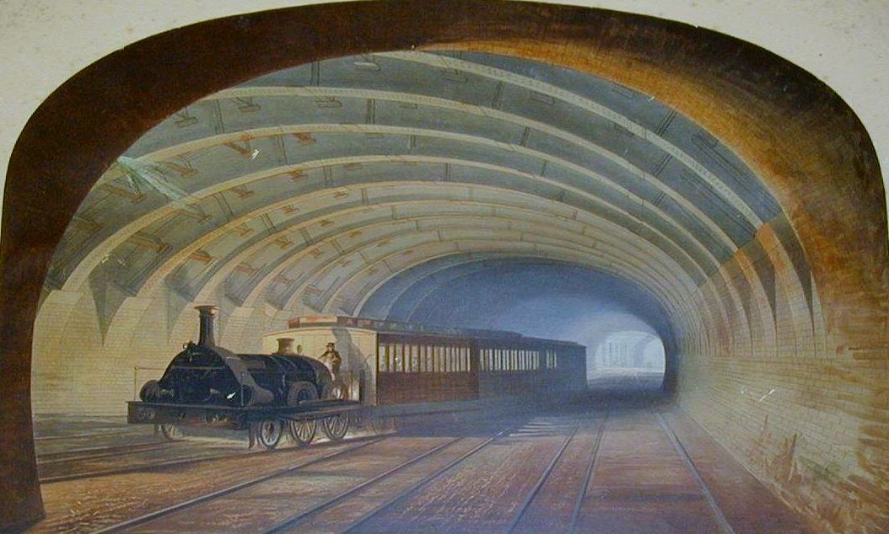
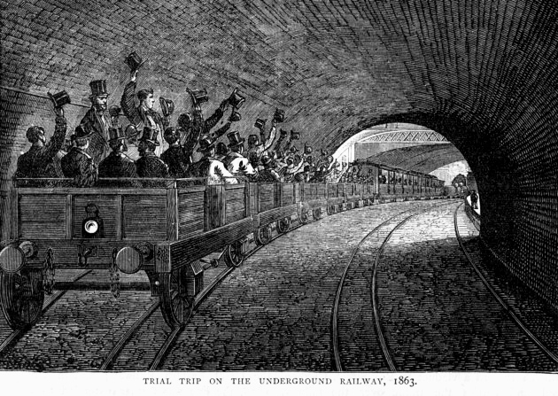

Session 2: 1863: the first underground railway
Déroulé de la séance
Séance de 55 minutes, calibrée sur 52 minutes.
- 8 min · Warm-up
- 14 min · Documents
- 12 min · Activities
- 8 min · Role play : chacun parle au moins une fois
- 10 min · Gap-fill et trace écrite
- Trace écrite. Deux ou trois phrases clés de la séance.
- Participation. Chacun parle au moins une fois : une phrase chacun.
- Travail pour la séance suivante. Le homework déjà indiqué sur la page.
Point d'arrêt. Fin de cette séance. Le homework est déjà indiqué plus bas sur la page.
Issue de secours · 8 min. Si le temps manque à ce point d'arrêt, on condense : on dicte une trace écrite courte (deux ou trois phrases clés de la séance) ; tour de table, une phrase chacun, pour que chacun ait parlé au moins une fois ; le travail à la maison, déjà indiqué sur la page, est écrit au tableau.
Objectives
- Understand a history text
- Use the past simple and the passive
Warm-up
Look at the pictures. What can you see? How old are they?
Documents

The Metropolitan Railway opened to the public on 10 January 1863, between Paddington (Bishop's Road) and Farringdon Street. It was the first underground railway in the world. On the first day it carried 38,000 passengers, and 9.5 million in its first year. Steam locomotives pulled gas lit carriages. Most of the line was built by cut and cover: workers dug a deep trench under the New Road, built the tunnel inside it and covered it again. The day before, the Prime Minister, Lord Palmerston, aged 79, had refused his invitation to the opening, saying that he hoped to stay above ground a little longer.
Sources: Wikipedia, Metropolitan Railway; History Today, First Day of the London Tube.



Activities
- Find the date, the two terminus stations and the building method.
- Explain cut and cover in your own words.
- Why is Palmerston's answer an example of British humour?
- Imagine the smell and the noise in 1863. Describe them.
Sentence starters
- In 1863, ...
- The tunnel was built by...
- It must have been...
- The Times first thought... but then...
Role play
Gap-fill worksheet
- The Metropolitan Railway opened to the public in ______.
- It ran between Paddington and ______.
- The building method was called cut and ______.
- On the first day it carried ______ passengers.
Answer key
- 1863
- Farringdon
- cover
- 38,000
Homework
Write a postcard from a passenger in 1863.
Assessment grid
| Criteria | Level 1 | Level 2 | Level 3 | Level 4 |
|---|---|---|---|---|
| Content | Few ideas | Some ideas | Clear ideas | Rich, precise ideas |
| Language | Many errors | Some errors | Mostly correct | Accurate and varied |
| Interaction / organisation | Little | Basic | Good | Fluent and natural |